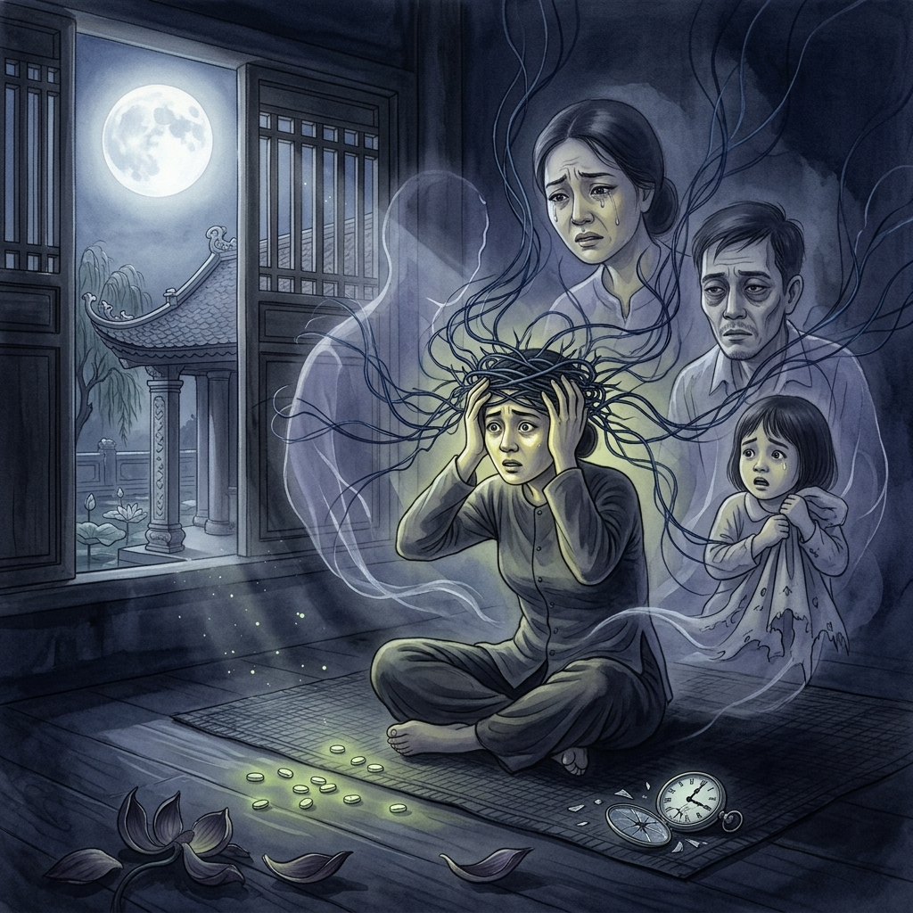
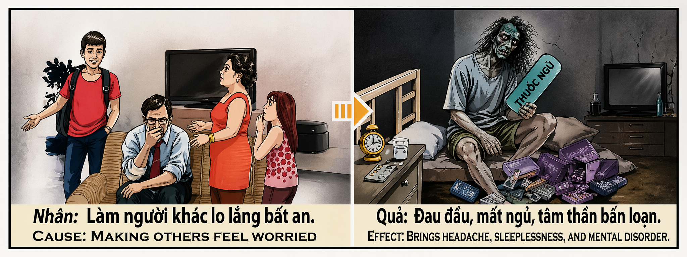

Las Noches sin LunaThe Moonless NightsLe Notti senza Luna无月之夜الليالي بلا قمرБезлунные ночиDie Mondlosen NächteLes Nuits sans Lune月のない夜As Noites sem LuaNhững Đêm Không Trăng
Quien siembra preocupación en el corazón de los que le aman — quien sale de noche sin avisar, quien desaparece durante días sin dar señales de vida, quien vive como si las lágrimas de su madre fueran agua de lluvia y las arrugas de su padre fueran grietas en una pared ajena — está tejiendo, sin saberlo, la sábana de su propio insomnio. Porque el karma no olvida ninguna noche en vela que hayamos causado: las recoge todas y las devuelve multiplicadas, convertidas en migrañas que no ceden, en ojos que no pueden cerrarse, en una mente que gira sin descanso como una rueda de molino vacía. Whoever sows worry in the hearts of those who love them — whoever goes out at night without warning, disappears for days without a sign of life, lives as though their mother's tears were rainwater and their father's wrinkles were cracks in someone else's wall — is weaving, unknowingly, the sheets of their own insomnia. For karma forgets no sleepless night we have caused: it gathers them all and returns them multiplied, turned into migraines that will not yield, into eyes that cannot close, into a mind that spins without rest like an empty millstone. Chi semina preoccupazione nel cuore di chi lo ama — chi esce di notte senza avvisare, chi scompare per giorni senza dare segni di vita — sta tessendo, senza saperlo, il lenzuolo della propria insonnia. Perché il karma non dimentica nessuna notte in bianco che abbiamo causato: le raccoglie tutte e le restituisce moltiplicate, trasformate in emicranie che non cedono, in occhi che non riescono a chiudersi, in una mente che gira senza sosta. 在爱你之人的心中播下忧虑的种子——夜不归宿不打招呼，失踪数日杳无音信，仿佛母亲的泪水只是雨水、父亲的皱纹不过是别人墙上的裂痕——其实正在不知不觉中编织自己失眠的被单。因为业力不会忘记我们曾造成的每一个不眠之夜：它将它们统统收集，加倍奉还，化作无法消退的偏头痛、无法合上的双眼、如空磨盘般不停旋转的心智。 من يزرع القلق في قلوب من يحبّونه — من يخرج ليلاً دون إخبار ويختفي أياماً دون أثر — يحيك دون أن يدري ملاءة أرقه. فالكارما لا تنسى أي ليلة سهر سبّبناها: تجمعها كلها وتعيدها مضاعفة، صداعاً لا يهدأ وعيوناً لا تُغمض وعقلاً يدور بلا راحة. Кто сеет тревогу в сердцах любящих — кто уходит ночью, не предупредив, исчезает на дни, не подавая признаков жизни — тот ткёт, сам того не зная, простыню собственной бессонницы. Ибо карма не забывает ни одной бессонной ночи, которую мы причинили: собирает их все и возвращает умноженными. Wer Sorge in die Herzen derer sät, die ihn lieben — wer nachts verschwindet, ohne Bescheid zu geben, wer tagelang ohne Lebenszeichen fortbleibt — webt, ohne es zu wissen, das Laken seiner eigenen Schlaflosigkeit. Denn das Karma vergisst keine durchwachte Nacht, die wir verursacht haben. Celui qui sème l'inquiétude dans le cœur de ceux qui l'aiment — qui sort la nuit sans prévenir, qui disparaît des jours sans donner signe de vie — tisse, sans le savoir, le drap de sa propre insomnie. Car le karma n'oublie aucune nuit blanche que nous avons causée. 愛する人々の心に心配の種を蒔く者——断りなく夜に出かけ、何日も音沙汰なく姿を消す者——は知らぬ間に自らの不眠のシーツを織っている。なぜならカルマは、私たちが引き起こした眠れぬ夜を一つも忘れないからだ。 Quem semeia preocupação no coração de quem o ama — quem sai de noite sem avisar, quem desaparece dias sem dar sinais de vida — está a tecer, sem saber, o lençol da sua própria insónia. Porque o karma não esquece nenhuma noite em claro que tenhamos causado. Kẻ gieo lo lắng vào trái tim những người yêu thương mình — ra ngoài ban đêm không báo, biến mất nhiều ngày không tăm hơi — đang dệt, mà chẳng hay, tấm ra giường của chính cơn mất ngủ mình. Vì nhân quả không quên bất kỳ đêm thức trắng nào ta từng gây ra.
La preocupación que causamos en los demás no es un acto inocente. Es una de las formas de violencia más sutiles que existen — una violencia invisible que no deja moretones en la piel pero deja cicatrices permanentes en el sistema nervioso de quien nos ama. Cada vez que un hijo sale sin avisar, cada vez que desaparece durante horas o días sin dar señales de vida, cada noche que su madre pasa en vela mirando el teléfono y cada madrugada que su padre recorre calles vacías buscando su coche, se produce una transferencia kármica tan real como una transacción bancaria: horas de sueño robadas al corazón de otro.
El karma de la preocupación opera con una precisión de cirujano. No se cobra en moneda visible ni en catástrofes espectaculares. Se cobra en la materia más íntima que poseemos: el descanso. Porque el sueño no es un lujo — es el mecanismo que la vida utiliza para repararse a sí misma. Quien roba el sueño de otro le está robando, literalmente, su capacidad de regeneración. Y el universo, que lleva la cuenta de cada noche en vela con la exactitud de un contable celestial, devuelve cada hora sustraída con intereses: migrañas que llegan como martillazos, insomnio que se instala como un inquilino permanente, ansiedad que corroe la mente como un ácido lento.
Lo más trágico es que el causante de la preocupación rara vez es consciente del daño que provoca. Dice «no es para tanto», dice «exageran», dice «son sus problemas». Pero el karma no escucha excusas. No hay tribunal de apelación en la ley de causa y efecto. La madre que murió con el corazón envejecido por décadas de noches en vela no necesita vengar nada: la propia mecánica del universo se encarga de que cada noche robada regrese al remitente transformada en pesadilla, pastilla, o vacío.
The worry we cause in others is not an innocent act. It is one of the most subtle forms of violence that exist — an invisible violence that leaves no bruises on the skin but leaves permanent scars on the nervous system of those who love us. Every time a child goes out without warning, every time they disappear for hours or days without giving a sign of life, every night their mother spends awake staring at the phone and every dawn their father drives through empty streets searching for their car, a karmic transfer occurs as real as a bank transaction: hours of sleep stolen from another's heart.
The karma of worry operates with surgical precision. It does not collect in visible currency or spectacular catastrophes. It collects in the most intimate matter we possess: rest. Because sleep is not a luxury — it is the mechanism that life uses to repair itself. Whoever steals another's sleep is literally stealing their capacity for regeneration. And the universe, which accounts for every sleepless night with the exactness of a celestial bookkeeper, returns every subtracted hour with interest: migraines that arrive like hammer blows, insomnia that moves in like a permanent tenant, anxiety that corrodes the mind like a slow acid.
The most tragic thing is that the one who causes the worry is rarely aware of the damage they inflict. They say "it's not a big deal," they say "they exaggerate," they say "those are their problems." But karma does not listen to excuses. There is no court of appeal in the law of cause and effect. The mother who died with a heart aged by decades of sleepless nights needs no revenge: the very mechanics of the universe ensure that every stolen night returns to the sender, transformed into nightmare, pill, or emptiness.
La preoccupazione che causiamo negli altri non è un atto innocente. È una delle forme più sottili di violenza — invisibile, che non lascia lividi sulla pelle ma lascia cicatrici permanenti nel sistema nervoso di chi ci ama. Ogni volta che un figlio esce senza avvisare, ogni notte che sua madre trascorre insonne guardando il telefono, si produce un trasferimento karmico reale come una transazione bancaria: ore di sonno rubate al cuore altrui.
Il karma della preoccupazione opera con precisione chirurgica. Non si riscuote in moneta visibile né in catastrofi spettacolari. Si riscuote nella materia più intima: il riposo. Chi ruba il sonno altrui ruba letteralmente la sua capacità di rigenerazione. E l'universo restituisce ogni ora sottratta con gli interessi: emicranie, insonnia permanente, ansia che corrode la mente come un acido lento.
La cosa più tragica è che chi causa la preoccupazione raramente è consapevole del danno. Dice «non è nulla», dice «esagerano». Ma il karma non ascolta scuse. Non esiste tribunale d'appello nella legge di causa ed effetto. La madre morta col cuore invecchiato da decenni di notti insonni non ha bisogno di vendetta: la meccanica dell'universo fa sì che ogni notte rubata torni al mittente trasformata in incubo, pillola o vuoto.
我们在他人心中引发的忧虑并非无辜之举。这是最微妙的暴力形式之一——一种看不见的暴力，不在皮肤上留下淤伤，却在爱你之人的神经系统上留下永久的伤疤。每一次孩子不告而出，每一个母亲盯着手机彻夜未眠的夜晚，都是一笔真实的业力转账：从他人心中窃取的睡眠时间。
忧虑的业报运作着外科手术般的精准。它不以可见的货币收取，不以壮观的灾难收取。它以我们拥有的最私密的物质——休息——来收取。因为睡眠不是奢侈品，它是生命用以自我修复的机制。偷走他人睡眠的人，字面意义上偷走了他们的再生能力。而宇宙以天上会计的精确度记录每一个不眠之夜，连本带利归还每一个被窃取的小时。
最可悲的是，引发忧虑的人自己很少意识到造成的伤害。他说「没什么大不了的」，他说「太夸张了」。但业力不听借口。因果律没有上诉法庭。那个心脏因几十年的不眠之夜而衰老的母亲不需要复仇：宇宙自身的机制确保每一个被偷走的夜晚都会回到发送者手中——化作噩梦、药片，或虚空。
القلق الذي نسببه للآخرين ليس فعلاً بريئاً. إنه أحد أدق أشكال العنف — عنف خفي لا يترك كدمات على الجلد لكنه يترك ندوباً دائمة في الجهاز العصبي لمن يحبنا. كل ليلة تمضيها الأم ساهرة تنظر إلى هاتفها هي تحويل كارمي حقيقي: ساعات نوم مسروقة من قلب آخر.
كارما القلق تعمل بدقة الجراح. لا تُحصّل بعملة ظاهرة ولا بكوارث مشهودة. تُحصّل في أخصّ ما نملك: الراحة. فالنوم ليس ترفاً بل آلية تستخدمها الحياة لإصلاح ذاتها. من يسرق نوم غيره يسرق حرفياً قدرته على التجدد. والكون يحتسب كل ليلة سهر بدقة محاسب سماوي ثم يعيدها بفوائدها.
والأكثر مأساوية أن مسبب القلق نادراً ما يدرك الضرر. يقول «ليس الأمر بهذه الخطورة» ويقول «يبالغون». لكن الكارما لا تسمع أعذاراً. لا محكمة استئناف في قانون السبب والأثر.
Тревога, которую мы причиняем другим, — не безобидный акт. Это одна из самых тонких форм насилия — невидимое насилие, которое не оставляет синяков на коже, но оставляет постоянные шрамы на нервной системе тех, кто нас любит. Каждая ночь, когда мать не спит, глядя на телефон, — это реальный кармический перевод: часы сна, украденные из чужого сердца.
Карма тревоги действует с хирургической точностью. Она не взимается видимой валютой или впечатляющими катастрофами. Она взимается самой интимной материей, которой мы обладаем: отдыхом. Потому что сон — не роскошь, а механизм, которым жизнь восстанавливает саму себя. Кто крадёт чужой сон, буквально крадёт его способность к регенерации. А вселенная возвращает каждый украденный час с процентами.
Самое трагичное в том, что виновник тревоги редко осознаёт причинённый ущерб. Говорит «не стоит так переживать», говорит «преувеличиваете». Но карма не слушает оправданий. В законе причины и следствия нет апелляционного суда.
Die Sorge, die wir anderen bereiten, ist keine unschuldige Handlung. Sie ist eine der subtilsten Formen von Gewalt — unsichtbar, hinterlässt keine Blutergüsse auf der Haut, aber permanente Narben im Nervensystem derer, die uns lieben. Jede Nacht, die eine Mutter wachend auf das Telefon starrend verbringt, ist eine reale karmische Übertragung: Stunden Schlaf, gestohlen aus dem Herzen eines anderen.
Das Karma der Sorge arbeitet mit chirurgischer Präzision. Es kassiert nicht in sichtbarer Währung oder spektakulären Katastrophen. Es kassiert in der intimsten Materie, die wir besitzen: Ruhe. Denn Schlaf ist kein Luxus — er ist der Mechanismus, mit dem sich das Leben selbst repariert. Wer den Schlaf eines anderen stiehlt, stiehlt buchstäblich dessen Regenerationsfähigkeit. Und das Universum gibt jede gestohlene Stunde mit Zinsen zurück.
Das Tragischste ist, dass der Verursacher der Sorge sich des Schadens selten bewusst ist. Er sagt „ist doch nicht so schlimm", er sagt „sie übertreiben". Aber das Karma hört keine Entschuldigungen. Im Gesetz von Ursache und Wirkung gibt es kein Berufungsgericht.
L'inquiétude que nous causons aux autres n'est pas un acte innocent. C'est l'une des formes de violence les plus subtiles — invisible, qui ne laisse pas de bleus sur la peau mais laisse des cicatrices permanentes sur le système nerveux de ceux qui nous aiment. Chaque nuit qu'une mère passe éveillée à fixer son téléphone est un transfert karmique réel : des heures de sommeil volées au cœur d'un autre.
Le karma de l'inquiétude opère avec une précision chirurgicale. Il ne se perçoit ni en monnaie visible ni en catastrophes spectaculaires. Il se perçoit dans la matière la plus intime que nous possédions : le repos. Car le sommeil n'est pas un luxe — c'est le mécanisme que la vie utilise pour se réparer. Celui qui vole le sommeil d'un autre lui vole littéralement sa capacité de régénération. Et l'univers rend chaque heure soustraite avec intérêts.
Le plus tragique est que celui qui cause l'inquiétude est rarement conscient du mal qu'il inflige. Il dit « ce n'est pas si grave », il dit « ils exagèrent ». Mais le karma n'écoute pas les excuses. Il n'y a pas de cour d'appel dans la loi de cause à effet.
他者に心配をかけることは無害な行為ではありません。それは最も繊細な暴力の一形態です——肌にあざを残さないが、愛する人の神経系に永久の傷痕を残す見えない暴力です。子どもが断りなく出かけるたびに、母親が電話を見つめて眠れぬ夜を過ごすたびに、銀行取引と同じくらい現実的なカルマの移転が起こります：他者の心臓から盗まれた睡眠の時間。
心配のカルマは外科医のような精密さで作動します。目に見える通貨でも壮大な災害でもなく、私たちが持つ最も親密な物質——休息——で徴収されます。なぜなら睡眠は贅沢品ではなく、生命が自らを修復するために使う仕組みだからです。他者の睡眠を盗む者は、文字通りその再生能力を盗んでいるのです。そして宇宙は、盗まれたすべての時間を利子付きで返します。
最も悲劇的なのは、心配を引き起こす本人が自分の与えるダメージにほとんど気づいていないことです。「大したことない」と言い、「大げさだ」と言います。しかしカルマは言い訳を聞きません。因果の法則に控訴裁判所はないのです。
A preocupação que causamos nos outros não é um ato inocente. É uma das formas de violência mais subtis que existem — uma violência invisível que não deixa nódoas negras na pele, mas deixa cicatrizes permanentes no sistema nervoso de quem nos ama. Cada noite que uma mãe passa em claro a olhar para o telefone é uma transferência kármica tão real como uma transação bancária: horas de sono roubadas ao coração de outrem.
O karma da preocupação opera com precisão cirúrgica. Não se cobra em moeda visível nem em catástrofes espetaculares. Cobra-se na matéria mais íntima que possuímos: o descanso. Porque o sono não é um luxo — é o mecanismo que a vida usa para se reparar. Quem rouba o sono de outrem está literalmente a roubar-lhe a capacidade de regeneração. E o universo devolve cada hora subtraída com juros.
O mais trágico é que quem causa a preocupação raramente tem consciência do dano que provoca. Diz «não é para tanto», diz «exageram». Mas o karma não ouve desculpas. Não há tribunal de recurso na lei de causa e efeito.
Nỗi lo lắng ta gây ra cho người khác không phải hành động vô hại. Đó là một trong những hình thức bạo lực tinh vi nhất — bạo lực vô hình không để lại vết bầm trên da nhưng để lại sẹo vĩnh viễn trên hệ thần kinh của người yêu thương ta. Mỗi đêm mẹ thức trắng nhìn điện thoại là một giao dịch nhân quả thật sự: giờ ngủ bị đánh cắp từ trái tim người khác.
Nghiệp của sự lo lắng vận hành với độ chính xác của dao mổ. Nó không thu bằng tiền bạc hay thảm họa hữu hình. Nó thu bằng thứ thân mật nhất ta có: sự nghỉ ngơi. Vì giấc ngủ không phải xa xỉ — nó là cơ chế sự sống dùng để tự sửa chữa. Ai đánh cắp giấc ngủ người khác là đánh cắp năng lực tái tạo của họ. Và vũ trụ trả lại mỗi giờ bị trừ kèm lãi suất.
Bi kịch nhất là kẻ gây lo lắng ít khi biết mình gây hại. Nói «có gì đâu mà căng», nói «lớn chuyện quá». Nhưng nhân quả không nghe lời bào chữa. Luật nhân quả không có tòa phúc thẩm.
Las Hermanas del Farol y la Noche
The Sisters of the Lantern and the Night
Le Sorelle della Lanterna e della Notte
灯笼与黑夜的姐妹
أختا الفانوس والليل
Сёстры фонаря и ночи
Die Schwestern der Laterne und der Nacht
Les Sœurs de la Lanterne et de la Nuit
提灯と夜闇の姉妹
As Irmãs da Lanterna e da Noite
Hai Chị Em Chiếc Đèn Lồng Và Đêm Tối
En una casa de paredes encaladas a orillas del río Perfume, en Huế, vivía una familia con dos hijas: Lan y Mai. El padre era profesor de caligrafía en la escuela del barrio — un hombre silencioso que caminaba como si sus pies pidieran perdón al suelo por pisarlo. La madre cosía vestidos de seda para las bodas de la ciudad y tenía las manos tan gastadas que parecían hechas de papel de arroz. Criaron a sus hijas con la única riqueza que poseían: presencia constante, sopa caliente, y la promesa de que siempre habría alguien despierto esperándolas.
Mai, la mayor, absorbió ese amor como la tierra absorbe la lluvia. Se convirtió en enfermera en la clínica del distrito. Cada noche, al terminar su turno, caminaba las siete calles que separaban la clínica de la casa familiar, y al llegar encendía el farol de la entrada para que sus padres supieran que estaba bien. Nunca olvidaba. La luz del farol era la pastilla para dormir de su madre, la oración respondida de su padre. Con esa pequeña llama, Mai le decía al universo: «Los que me aman no sufrirán por mi culpa.»
Lan, la menor, nació con el viento dentro del pecho. A los dieciséis años comenzó a salir por las noches sin decir adónde iba. Volvía a las tres, a las cuatro de la madrugada, a veces con olor a tabaco, a veces con los ojos brillantes de algo que la madre no quería nombrar. «Es joven», se decía el padre, frotándose las manos como si pudiera calentar con ellas la preocupación que le helaba el pecho. «Ya madurará», se decía la madre, sentada en la mecedora junto a la ventana, sin poder dormir, contando cada ruido de la calle como quien cuenta las cuentas de un rosario roto.
Pero Lan no maduró. A los veinte desapareció durante tres días completos. La madre dejó de comer. El padre recorrió cada hospital, cada comisaría, cada callejón del barrio antiguo preguntando por su hija con una fotografía que le temblaba entre los dedos. Cuando Lan volvió — sonriente, sin disculpas, como quien vuelve de un paseo — encontró a su madre en cama con fiebre y a su padre sentado en el suelo de la cocina, llorando en silencio. «No es para tanto», dijo Lan, y se fue a su habitación. Esa noche, el corazón de la madre envejeció diez años.
Los años pasaron. La madre murió una noche de agosto — no de enfermedad, sino de acumulación de noches sin dormir. El médico escribió «fallo cardíaco» en el certificado, pero Mai sabía la verdad: su madre había muerto de preocupación cristalizada, de ansiedad convertida en piedra, de tantas madrugadas esperando el sonido de una puerta que no se abría. El padre la siguió seis meses después. Se acostó una tarde en la mecedora de la madre, cerró los ojos y no volvió a abrirlos. Sobre su regazo tenía la fotografía con la que había buscado a Lan aquella vez, arrugada por los años y por las lágrimas.
Mai heredó la serenidad de quien ha vivido sin deberle sufrimiento a nadie. Dormía cada noche como una niña — ocho horas de sueño profundo, sin sobresaltos, sin pastillas. Su mente era un lago quieto. Envejeció rodeada de pacientes que la querían, de vecinos que le confiaban a sus hijos, de una paz interior que nadie podía quitarle porque la había construido ladrillo a ladrillo, noche a noche, farol a farol.
Lan, al cumplir cuarenta años, comenzó a no poder dormir. Al principio era una hora de desvelo. Después dos. Después noches enteras con los ojos abiertos mirando el techo de un apartamento vacío. Las migrañas llegaron como campanadas — regulares, despiadadas, cada vez más fuertes. Los médicos le recetaron pastillas que le daban un sueño artificial y pegajoso, lleno de pesadillas en las que su madre la llamaba desde una ventana y ella no podía responder. La ansiedad se instaló en su pecho como un inquilino que no paga alquiler: permanente, ruidoso, destructor. A los cincuenta, no conseguía mantener un trabajo. A los sesenta, vivía sola con una mesa de noche llena de medicamentos que ya no funcionaban y un reloj que marcaba las tres de la madrugada cada noche como una sentencia que se repetía sin fin.
Los monjes del templo cerca del río Perfume cuentan que el karma de la preocupación es el más preciso de todos. No se cobra en moneda ni en desgracias visibles. Se cobra en horas de sueño. Cada noche que le robas al descanso de quien te ama se convierte en una noche que el universo le roba a tu propio descanso. Cada lágrima de ansiedad que causas se transforma en una pastilla que algún día necesitarás. Cada arruga de preocupación que provocas en el rostro de tus padres se graba, con el tiempo, en la superficie de tu propio cerebro. Mai encendía el farol — y ese gesto, tan pequeño, tan sencillo, fue suficiente para comprarle una vida de sueño tranquilo. Lan apagaba el farol de los suyos — y pasó el resto de su vida buscando en la farmacia una luz que reemplazara la que ella misma había extinguido.
In a whitewashed house on the banks of the Perfume River, in Huế, a family lived with two daughters: Lan and Mai. The father was a calligraphy teacher at the neighborhood school — a quiet man who walked as though his feet were apologizing to the ground for stepping on it. The mother sewed silk dresses for the city's weddings and had hands so worn they looked made of rice paper. They raised their daughters with the only wealth they possessed: constant presence, warm soup, and the promise that someone would always be awake, waiting for them.
Mai, the elder, absorbed that love as earth absorbs rain. She became a nurse at the district clinic. Every night, when her shift ended, she walked the seven streets between the clinic and the family home, and upon arriving she lit the lantern at the entrance so her parents would know she was safe. She never forgot. The lantern's light was her mother's sleeping pill, her father's answered prayer. With that small flame, Mai told the universe: "Those who love me will not suffer because of me."
Lan, the younger, was born with the wind inside her chest. At sixteen she began going out at night without saying where. She came back at three, four in the morning, sometimes smelling of tobacco, sometimes with eyes bright from something her mother did not want to name. "She's young," the father told himself, rubbing his hands together as if he could warm with them the worry that froze his chest. "She'll mature," the mother told herself, sitting in the rocking chair by the window, unable to sleep, counting every street noise like beads on a broken rosary.
But Lan did not mature. At twenty she disappeared for three full days. The mother stopped eating. The father walked every hospital, every police station, every alley in the old quarter asking for his daughter with a photograph that trembled between his fingers. When Lan returned — smiling, without apology, like someone coming back from a stroll — she found her mother in bed with a fever and her father sitting on the kitchen floor, weeping silently. "It's not a big deal," Lan said, and went to her room. That night, the mother's heart aged ten years.
The years passed. The mother died one August night — not of illness, but of accumulated sleepless nights. The doctor wrote "heart failure" on the certificate, but Mai knew the truth: her mother had died of crystallized worry, of anxiety turned to stone, of too many dawns waiting for the sound of a door that never opened. The father followed six months later. He lay down one afternoon in the mother's rocking chair, closed his eyes, and never opened them again. On his lap was the photograph he had used to search for Lan that time, crumpled by the years and by the tears.
Mai inherited the serenity of one who has lived without owing suffering to anyone. She slept each night like a child — eight hours of deep sleep, without starts, without pills. Her mind was a still lake. She aged surrounded by patients who loved her, neighbors who entrusted their children to her, an inner peace no one could take from her because she had built it brick by brick, night by night, lantern by lantern.
Lan, upon turning forty, began to be unable to sleep. At first it was an hour of wakefulness. Then two. Then entire nights with eyes open staring at the ceiling of an empty apartment. The migraines came like bell-tolls — regular, merciless, each stronger than the last. Doctors prescribed pills that gave her an artificial, sticky sleep, full of nightmares in which her mother called to her from a window and she could not answer. Anxiety settled in her chest like a tenant who pays no rent: permanent, noisy, destructive. At fifty, she could not hold a job. At sixty, she lived alone with a nightstand full of medications that no longer worked and a clock that struck three in the morning every night like a sentence repeating without end.
The monks of the temple near the Perfume River say that the karma of worry is the most precise of all. It does not collect in currency or in visible misfortunes. It collects in hours of sleep. Every night you steal from the rest of someone who loves you becomes a night the universe steals from your own rest. Every tear of anxiety you cause transforms into a pill you will someday need. Every wrinkle of worry you provoke on your parents' face is engraved, in time, on the surface of your own brain. Mai lit the lantern — and that gesture, so small, so simple, was enough to purchase a lifetime of peaceful sleep. Lan extinguished the lantern of her loved ones — and spent the rest of her life searching in the pharmacy for a light to replace the one she herself had blown out.
In una casa dalle pareti imbiancate sulle rive del Fiume dei Profumi, a Huế, viveva una famiglia con due figlie: Lan e Mai. Il padre era insegnante di calligrafia nella scuola del quartiere — un uomo silenzioso che camminava come se i suoi piedi chiedessero scusa al suolo per calpestarlo. La madre cuciva abiti di seta per i matrimoni della città e aveva le mani così consumate da sembrare fatte di carta di riso. Crebbero le figlie con l'unica ricchezza che possedevano: presenza costante, zuppa calda e la promessa che ci sarebbe sempre stato qualcuno sveglio ad aspettarle.
Mai, la maggiore, assorbì quell'amore come la terra assorbe la pioggia. Divenne infermiera nella clinica del distretto. Ogni sera, al termine del turno, percorreva le sette strade tra la clinica e la casa di famiglia, e all'arrivo accendeva la lanterna all'ingresso perché i genitori sapessero che stava bene. Non dimenticava mai. La luce della lanterna era la pillola per dormire della madre, la preghiera esaudita del padre. Con quella piccola fiamma, Mai diceva all'universo: «Chi mi ama non soffrirà per colpa mia.»
Lan, la minore, era nata col vento nel petto. A sedici anni cominciò a uscire la sera senza dire dove andava. Tornava alle tre, alle quattro del mattino, a volte con l'odore del tabacco, a volte con gli occhi lucenti di qualcosa che la madre non voleva nominare. «È giovane», si diceva il padre, sfregandosi le mani come per riscaldare con esse la preoccupazione che gli gelava il petto. «Maturerà», si diceva la madre, seduta sulla sedia a dondolo accanto alla finestra, senza riuscire a dormire, contando ogni rumore della strada come i grani di un rosario spezzato.
Ma Lan non maturò. A vent'anni sparì per tre giorni interi. La madre smise di mangiare. Il padre percorse ogni ospedale, ogni commissariato, ogni vicolo del quartiere antico cercando la figlia con una fotografia che gli tremava tra le dita. Quando Lan tornò — sorridente, senza scuse, come chi torna da una passeggiata — trovò la madre a letto con la febbre e il padre seduto sul pavimento della cucina, che piangeva in silenzio. «Non è nulla di grave», disse Lan, e andò nella sua stanza. Quella notte, il cuore della madre invecchiò di dieci anni.
Gli anni passarono. La madre morì una notte di agosto — non di malattia, ma di accumulo di notti insonni. Il medico scrisse «insufficienza cardiaca» sul certificato, ma Mai conosceva la verità: la madre era morta di preoccupazione cristallizzata, di ansia diventata pietra, di troppe albe trascorse aspettando il suono di una porta che non si apriva. Il padre la seguì sei mesi dopo. Si distese un pomeriggio sulla sedia a dondolo della madre, chiuse gli occhi e non li riaprì. Sul grembo aveva la fotografia con cui aveva cercato Lan quella volta, sgualcita dagli anni e dalle lacrime.
Mai ereditò la serenità di chi ha vissuto senza dovere sofferenza a nessuno. Dormiva ogni notte come una bambina — otto ore di sonno profondo, senza sobbalzi, senza pillole. La sua mente era un lago quieto. Invecchiò circondata da pazienti che la amavano, da vicini che le affidavano i propri figli, da una pace interiore che nessuno poteva toglierle perché l'aveva costruita mattone dopo mattone, notte dopo notte, lanterna dopo lanterna.
Lan, compiuti i quarant'anni, cominciò a non riuscire a dormire. All'inizio un'ora di veglia. Poi due. Poi notti intere con gli occhi aperti a fissare il soffitto di un appartamento vuoto. Le emicranie arrivarono come rintocchi — regolari, spietate, ogni volta più forti. I medici le prescrissero pillole che le davano un sonno artificiale e appiccicoso, pieno di incubi in cui la madre la chiamava da una finestra e lei non riusciva a rispondere. L'ansia si installò nel suo petto come un inquilino che non paga l'affitto: permanente, rumoroso, distruttore. A cinquant'anni non riusciva a mantenere un lavoro. A sessanta, viveva sola con un comodino pieno di farmaci che non funzionavano più e un orologio che segnava le tre di notte ogni notte come una sentenza che si ripeteva senza fine.
I monaci del tempio vicino al Fiume dei Profumi raccontano che il karma della preoccupazione è il più preciso di tutti. Non si riscuote in moneta né in disgrazie visibili. Si riscuote in ore di sonno. Ogni notte che rubi al riposo di chi ti ama diventa una notte che l'universo ruba al tuo riposo. Ogni lacrima d'ansia che causi si trasforma in una pillola di cui un giorno avrai bisogno. Ogni ruga di preoccupazione che provochi sul viso dei tuoi genitori si incide, col tempo, sulla superficie del tuo stesso cervello. Mai accendeva la lanterna — e quel gesto, così piccolo, così semplice, bastò a comprarle una vita di sonno tranquillo. Lan spegneva la lanterna dei suoi cari — e passò il resto della vita cercando in farmacia una luce che sostituisse quella che lei stessa aveva spento.
在顺化香江河畔，有一户粉刷白墙的人家，住着一对父母和两个女儿：兰和梅。父亲是街区学校的书法老师——一个安静的男人，走路时仿佛双脚在向大地道歉。母亲为城里的婚礼缝制丝绸衣裳，她的双手磨损得如同宣纸。他们用仅有的财富养育女儿：不离不弃的陪伴、热腾腾的汤，以及一个承诺——无论多晚，总会有人醒着等她们回来。
姐姐梅像大地吸收雨水一般汲取了那份爱。她成为区诊所的护士。每天夜班结束后，她走过诊所和家之间的七条街，到家后就点亮门口的灯笼，好让父母知道她平安归来。她从不忘记。灯笼的光是母亲的安眠药，是父亲被应许的祈祷。用那一团小小的火焰，梅对宇宙说：「爱我的人不会因我而受苦。」
妹妹兰天生胸中有风。十六岁起她开始夜不归宿，从不说去了哪里。凌晨三点、四点回来，有时身上带着烟味，有时眼里闪着母亲不愿叫出名字的光。「她还年轻，」父亲对自己说，搓着双手，仿佛能用手掌的温度暖化胸中那块冰冷的忧虑。「会懂事的，」母亲对自己说，坐在窗边的摇椅上，无法入睡，把街上的每一个声响当作念珠上断裂的珠子来数。
但兰没有懂事。二十岁那年她失踪了整整三天。母亲不再进食。父亲跑遍每家医院、每个派出所、老城区的每条巷子，用一张在指间颤抖的照片打听女儿的下落。兰回来时——满面笑容，毫无歉意，像散步归来一样——发现母亲发着烧躺在床上，父亲坐在厨房地板上默默流泪。「又没什么大不了的，」兰说完，径自回了房间。那一夜，母亲的心老了十年。
岁月流逝。母亲在一个八月的夜晚去世了——不是因为疾病，而是因为无数失眠之夜的累积。医生在证明上写的是「心力衰竭」，但梅知道真相：母亲死于凝固的担忧、化为石头的焦虑、太多个等待一扇永远不开的门的黎明。父亲六个月后追随而去。一个下午，他躺在母亲的摇椅上，闭上眼睛，再也没有睁开。膝上放着当年找兰用的那张照片，被岁月和泪水揉皱了。
梅继承了一生不曾亏欠任何人痛苦之人的安宁。她每晚像孩子一样安睡——八小时深沉的睡眠，无惊无扰，不需要药片。她的心智是一汪静湖。她在爱她的病人、把孩子托付给她的邻居和一份无人能夺的内心平静中老去——那份平静是她一砖一瓦、一夜一夜、一盏灯笼一盏灯笼地筑起来的。
兰在四十岁时开始失眠。起初是一小时的清醒，后来两小时，后来整夜睁着眼盯着空荡公寓的天花板。偏头痛像钟声般降临——有规律地、无情地，一次比一次猛烈。医生开的药只给她黏糊糊的人工睡眠，满是母亲从窗口呼唤她而她无法应答的噩梦。焦虑像一个不交房租的租客定居在她胸口：永远在、嘈杂不息、摧毁一切。五十岁时她无法保住一份工作。六十岁时她独居，床头柜上堆满失效的药物，一个时钟每夜准时敲响凌晨三点，如同一道无穷重复的判决。
香江边寺庙的僧侣们说，忧虑的业报是所有业报中最精准的。它不以钱币收取，不以可见的灾祸收取。它以睡眠的小时数收取。你从爱你之人的安眠中偷走的每一个夜晚，都会变成宇宙从你自己的安眠中偷走的一个夜晚。你引起的每一滴焦虑之泪都将化作你终将需要的一颗药片。你在父母脸上刻下的每一道忧愁的皱纹，终有一天会被刻在你自己大脑的表面。梅点亮灯笼——那个细小、简单的举动，足以为她买下一生安宁的睡眠。兰熄灭了至亲的灯笼——然后用余生在药房里寻找一盏能替代她亲手吹熄的光。
في بيت أبيض الجدران على ضفاف نهر العطور في هوي عاشت عائلة مع ابنتين: لان وماي. كان الأب معلّم خط في مدرسة الحي — رجل صامت يمشي كأن قدميه تعتذران للأرض عن دوسها. وكانت الأم تخيط فساتين حرير لأعراس المدينة بيدين بالية كأنها من ورق الأرز. ربّيا ابنتيهما بالثروة الوحيدة التي يملكانها: الحضور الدائم والحساء الساخن والوعد بأن أحداً سيظل مستيقظاً ينتظرهما دائماً.
امتصت ماي الكبرى ذلك الحب كما تمتص الأرض المطر. صارت ممرضة في عيادة المقاطعة. كل مساء حين ينتهي نوبتها تمشي الشوارع السبعة بين العيادة والبيت وعند وصولها تُشعل فانوس المدخل ليعلم والداها أنها بخير. لم تنسَ قط. كان نور الفانوس حبة منوّم الأم ودعاء الأب المستجاب. بتلك الشعلة الصغيرة قالت ماي للكون: «من يحبّني لن يتألم بسببي.»
أما لان الصغرى فوُلدت والريح في صدرها. في السادسة عشرة بدأت تخرج ليلاً دون أن تقول إلى أين. تعود في الثالثة أو الرابعة فجراً أحياناً برائحة التبغ وأحياناً بعينين لامعتين بشيء لم تشأ الأم تسميته. «إنها شابة» يقول الأب لنفسه فاركاً يديه كأنه يستطيع تدفئة القلق الذي يجمّد صدره. «ستنضج» تقول الأم لنفسها جالسة على كرسي الهزّاز بجوار النافذة عاجزة عن النوم تعدّ كل ضجيج شارع كحبات مسبحة مكسورة.
لكن لان لم تنضج. في العشرين اختفت ثلاثة أيام كاملة. توقفت الأم عن الأكل. طاف الأب كل مستشفى وكل مخفر وكل زقاق في الحي القديم يسأل عن ابنته بصورة ترتجف بين أصابعه. حين عادت لان — مبتسمة بلا اعتذار كمن يعود من نزهة — وجدت أمها في الفراش محمومة وأباها جالساً على أرض المطبخ يبكي بصمت. «ليس الأمر بهذه الخطورة» قالت لان ودخلت غرفتها. تلك الليلة شاخ قلب الأم عشر سنوات.
مرّت السنون. ماتت الأم ذات ليلة في أغسطس — لا من مرض بل من تراكم ليالٍ بلا نوم. كتب الطبيب «قصور قلبي» في الشهادة لكن ماي عرفت الحقيقة: ماتت أمها من قلق متبلور من قلق تحوّل حجراً من فجرات كثيرة قضتها تنتظر صوت باب لا يُفتح. لحقها الأب بعد ستة أشهر. استلقى ذات عصر على كرسي هزّاز الأم وأغمض عينيه ولم يفتحهما ثانية. على حجره كانت الصورة التي بحث بها عن لان تلك المرة مجعّدة من السنين والدموع.
ورثت ماي سكينة من عاش دون أن يدين بمعاناة لأحد. كانت تنام كل ليلة كطفلة — ثماني ساعات من النوم العميق بلا فزع بلا حبوب. كان عقلها بحيرة ساكنة. شاخت محاطة بمرضى يحبونها وجيران يأتمنونها على أطفالهم وسلام داخلي لا يقدر أحد على انتزاعه لأنها بنته لبنة لبنة وليلة ليلة وفانوساً فانوساً.
لان حين بلغت الأربعين بدأت لا تستطيع النوم. في البداية ساعة أرق ثم ساعتان ثم ليالٍ كاملة بعينين مفتوحتين تحدّقان في سقف شقة فارغة. جاءت الشقيقات كقرع أجراس — منتظمة لا ترحم كل مرة أقوى. وصف الأطباء حبوباً أعطتها نوماً صناعياً لزجاً مليئاً بكوابيس تنادي فيها أمها من نافذة ولا تستطيع الرد. استقرّ القلق في صدرها كمستأجر لا يدفع إيجاراً: دائم صاخب مدمّر. في الخمسين لم تستطع الاحتفاظ بوظيفة. في الستين عاشت وحيدة مع طاولة مليئة بأدوية لم تعد تنفع وساعة تدقّ الثالثة فجراً كل ليلة كحكم يتكرّر بلا نهاية.
يروي رهبان المعبد قرب نهر العطور أن كارما القلق هي الأدق بين الجميع. لا تُحصّل بعملة ولا بمصائب ظاهرة. تُحصّل بساعات نوم. كل ليلة تسرقها من راحة من يحبك تصبح ليلة يسرقها الكون من راحتك. كل دمعة قلق تسببها تتحول حبة ستحتاجها يوماً. كل تجعيدة قلق تحفرها في وجه والديك تُنقش مع الوقت على سطح دماغك. ماي أشعلت الفانوس — وذلك الفعل الصغير البسيط كفى لشراء عمر من النوم الهانئ. لان أطفأت فانوس أحبائها — وأمضت باقي حياتها تبحث في الصيدلية عن نور يحلّ محل ذاك الذي أطفأته بيدها.
В побелённом доме на берегу Ароматной реки в Хюэ жила семья с двумя дочерьми: Лан и Май. Отец преподавал каллиграфию в школе квартала — тихий человек, ступавший так, будто его ноги просили у земли прощения за то, что ступают по ней. Мать шила шёлковые платья для городских свадеб, и её руки были так изношены, что казались сделанными из рисовой бумаги. Они вырастили дочерей с единственным богатством, которым владели: неизменным присутствием, горячим супом и обещанием, что кто-то всегда будет бодрствовать, ожидая их.
Май, старшая, впитала эту любовь, как земля впитывает дождь. Она стала медсестрой в районной клинике. Каждый вечер, закончив смену, она проходила семь улиц от клиники до родного дома и, придя, зажигала фонарь у входа, чтобы родители знали, что она в безопасности. Она никогда не забывала. Свет фонаря был снотворным для матери, ответом на молитву отца. Этим маленьким пламенем Май говорила вселенной: «Те, кто любит меня, не будут страдать из-за меня.»
Лан, младшая, родилась с ветром в груди. В шестнадцать лет она стала уходить по ночам, не говоря куда. Возвращалась в три, четыре утра, иногда пахнув табаком, иногда с глазами, блестящими от чего-то, что мать не хотела называть. «Она молода,» говорил себе отец, потирая руки, словно мог согреть ими тревогу, леденившую грудь. «Повзрослеет,» говорила себе мать, сидя в кресле-качалке у окна, не в силах уснуть, считая каждый уличный звук, как бусины сломанных чёток.
Но Лан не повзрослела. В двадцать она исчезла на три полных дня. Мать перестала есть. Отец обошёл каждую больницу, каждый полицейский участок, каждый переулок старого квартала, спрашивая о дочери, сжимая фотографию, дрожавшую в пальцах. Когда Лан вернулась — улыбаясь, без извинений, как после прогулки — она нашла мать в постели с лихорадкой и отца, сидящего на полу кухни и плачущего молча. «Не стоит так переживать,» сказала Лан и пошла в свою комнату. В ту ночь сердце матери постарело на десять лет.
Шли годы. Мать умерла одной августовской ночью — не от болезни, а от накопленных бессонных ночей. Врач написал «сердечная недостаточность» в свидетельстве, но Май знала правду: мать умерла от кристаллизовавшейся тревоги, от обратившейся в камень тревоги, от слишком многих рассветов в ожидании звука двери, которая не открывалась. Отец последовал за ней через шесть месяцев. Однажды днём он лёг в кресло-качалку матери, закрыл глаза и больше не открыл их. На коленях лежала фотография, с которой он искал Лан в тот раз — измятая годами и слезами.
Май унаследовала безмятежность человека, прожившего жизнь, не причинив никому страданий. Она спала каждую ночь как ребёнок — восемь часов глубокого сна, без вздрагиваний, без таблеток. Её разум был тихим озером. Она старела в окружении пациентов, которые её любили, соседей, доверявших ей своих детей, внутреннего покоя, который никто не мог отнять, потому что она строила его кирпич за кирпичом, ночь за ночью, фонарь за фонарём.
Лан, когда ей исполнилось сорок, перестала спать. Сначала час бессонницы. Потом два. Потом целые ночи с открытыми глазами, уставившись в потолок пустой квартиры. Мигрени пришли как удары колокола — регулярные, беспощадные, каждый раз сильнее. Врачи прописали таблетки, дававшие искусственный, липкий сон, полный кошмаров, в которых мать звала её из окна, а она не могла ответить. Тревога поселилась в груди как жилец, не платящий аренду: постоянный, шумный, разрушительный. В пятьдесят она не могла удержаться на работе. В шестьдесят жила одна с тумбочкой, полной лекарств, которые больше не действовали, и часами, отбивавшими три ночи каждую ночь как приговор, повторяющийся без конца.
Монахи храма у Ароматной реки говорят, что карма тревоги — самая точная из всех. Она не взимается деньгами и не видимыми бедами. Она взимается часами сна. Каждая ночь, украденная у покоя того, кто тебя любит, становится ночью, которую вселенная крадёт у твоего покоя. Каждая слеза тревоги, которую ты причинил, превращается в таблетку, которая тебе когда-нибудь понадобится. Каждая морщина беспокойства, которую ты вызвал на лице родителей, со временем отпечатывается на поверхности твоего собственного мозга. Май зажигала фонарь — и этого маленького, простого жеста хватило, чтобы купить ей жизнь спокойного сна. Лан гасила фонарь близких — и провела остаток жизни в поисках в аптеке света, который заменил бы тот, что она сама погасила.
In einem weißgetünchten Haus am Ufer des Parfümflusses in Huế lebte eine Familie mit zwei Töchtern: Lan und Mai. Der Vater war Kalligraphielehrer an der Nachbarschaftsschule — ein stiller Mann, der ging, als bäten seine Füße den Boden um Verzeihung dafür, dass sie ihn betraten. Die Mutter nähte Seidenkleider für die Hochzeiten der Stadt und hatte Hände, so abgenutzt, dass sie aus Reispapier zu sein schienen. Sie zogen ihre Töchter mit dem einzigen Reichtum auf, den sie besaßen: beständige Anwesenheit, warme Suppe und das Versprechen, dass immer jemand wach sein würde, um auf sie zu warten.
Mai, die Ältere, sog diese Liebe auf wie die Erde den Regen. Sie wurde Krankenschwester in der Bezirksklinik. Jeden Abend, wenn ihre Schicht endete, ging sie die sieben Straßen zwischen Klinik und Elternhaus und zündete beim Ankommen die Laterne am Eingang an, damit die Eltern wussten, dass sie wohlbehalten war. Sie vergaß es nie. Das Licht der Laterne war die Schlaftablette der Mutter, das erhörte Gebet des Vaters. Mit dieser kleinen Flamme sagte Mai dem Universum: „Wer mich liebt, wird meinetwegen nicht leiden."
Lan, die Jüngere, kam mit dem Wind in der Brust zur Welt. Mit sechzehn begann sie nachts auszugehen, ohne zu sagen wohin. Sie kam um drei, vier Uhr morgens zurück, manchmal nach Tabak riechend, manchmal mit Augen, die von etwas glänzten, das die Mutter nicht benennen wollte. „Sie ist jung," sagte sich der Vater und rieb seine Hände, als könnte er damit die Sorge wärmen, die seine Brust vereiste. „Sie wird reifen," sagte sich die Mutter im Schaukelstuhl am Fenster, schlaflos, jedes Straßengeräusch zählend wie Perlen eines zerbrochenen Rosenkranzes.
Doch Lan reifte nicht. Mit zwanzig verschwand sie drei volle Tage. Die Mutter hörte auf zu essen. Der Vater lief jedes Krankenhaus, jede Polizeistation, jede Gasse des Altstadtviertels ab und fragte nach seiner Tochter mit einem Foto, das zwischen seinen Fingern zitterte. Als Lan zurückkam — lächelnd, ohne Entschuldigung, wie nach einem Spaziergang — fand sie die Mutter fiebrig im Bett und den Vater auf dem Küchenboden sitzend, still weinend. „Ist doch nicht so schlimm," sagte Lan und ging in ihr Zimmer. In jener Nacht alterte das Herz der Mutter um zehn Jahre.
Die Jahre vergingen. Die Mutter starb in einer Augustnacht — nicht an Krankheit, sondern an angesammelten schlaflosen Nächten. Der Arzt schrieb „Herzversagen" auf die Urkunde, aber Mai kannte die Wahrheit: Ihre Mutter war an kristallisierter Sorge gestorben, an zu Stein gewordener Angst, an zu vielen Morgengrauen im Warten auf das Geräusch einer Tür, die sich nie öffnete. Der Vater folgte sechs Monate später. Er legte sich eines Nachmittags in den Schaukelstuhl der Mutter, schloss die Augen und öffnete sie nie wieder. Auf seinem Schoß lag das Foto, mit dem er Lan damals gesucht hatte — zerknittert von Jahren und Tränen.
Mai erbte die Gelassenheit eines Menschen, der gelebt hat, ohne jemandem Leid zu schulden. Sie schlief jede Nacht wie ein Kind — acht Stunden tiefen Schlafs, ohne Schrecken, ohne Pillen. Ihr Geist war ein stiller See. Sie alterte umgeben von Patienten, die sie liebten, Nachbarn, die ihr ihre Kinder anvertrauten, einem inneren Frieden, den niemand ihr nehmen konnte, weil sie ihn Stein für Stein, Nacht für Nacht, Laterne für Laterne gebaut hatte.
Lan konnte mit vierzig nicht mehr schlafen. Zuerst eine Stunde Wachliegen. Dann zwei. Dann ganze Nächte mit offenen Augen an die Decke einer leeren Wohnung starrend. Die Migränen kamen wie Glockenschläge — regelmäßig, gnadenlos, jedes Mal stärker. Ärzte verschrieben Pillen, die ihr einen künstlichen, klebrigen Schlaf gaben, voller Albträume, in denen die Mutter sie von einem Fenster rief und sie nicht antworten konnte. Die Angst nistete sich in ihrer Brust ein wie ein Mieter, der keine Miete zahlt: dauerhaft, laut, zerstörerisch. Mit fünfzig konnte sie keine Arbeit halten. Mit sechzig lebte sie allein mit einem Nachttisch voller Medikamente, die nicht mehr wirkten, und einer Uhr, die jede Nacht drei Uhr morgens schlug wie ein endlos sich wiederholendes Urteil.
Die Mönche des Tempels am Parfümfluss erzählen, dass das Karma der Sorge das präziseste von allen ist. Es kassiert nicht in Münzen oder sichtbarem Unglück. Es kassiert in Stunden Schlaf. Jede Nacht, die du dem Schlaf eines dich liebenden Menschen stiehlst, wird zu einer Nacht, die das Universum deinem eigenen Schlaf stiehlt. Jede Angstträne, die du verursachst, verwandelt sich in eine Pille, die du eines Tages brauchen wirst. Jede Sorgenfalte, die du im Gesicht deiner Eltern hervorrufst, wird mit der Zeit in die Oberfläche deines eigenen Gehirns eingraviert. Mai zündete die Laterne an — und diese kleine, einfache Geste genügte, um ihr ein Leben ruhigen Schlafs zu erkaufen. Lan löschte die Laterne ihrer Liebsten — und verbrachte den Rest ihres Lebens damit, in der Apotheke nach einem Licht zu suchen, das jenes ersetzen könnte, das sie selbst ausgeblasen hatte.
Dans une maison aux murs blanchis à la chaux, sur les rives de la Rivière des Parfums à Huế, vivait une famille avec deux filles : Lan et Mai. Le père enseignait la calligraphie à l'école du quartier — un homme silencieux qui marchait comme si ses pieds s'excusaient auprès du sol de le fouler. La mère cousait des robes de soie pour les mariages de la ville et avait les mains si usées qu'elles semblaient faites de papier de riz. Ils élevèrent leurs filles avec la seule richesse qu'ils possédaient : une présence constante, une soupe chaude et la promesse que quelqu'un serait toujours éveillé, à les attendre.
Mai, l'aînée, absorba cet amour comme la terre absorbe la pluie. Elle devint infirmière à la clinique du district. Chaque soir, à la fin de son service, elle parcourait les sept rues entre la clinique et la maison familiale, et en arrivant elle allumait la lanterne de l'entrée pour que ses parents sachent qu'elle était saine et sauve. Elle n'oubliait jamais. La lumière de la lanterne était le somnifère de sa mère, la prière exaucée de son père. Avec cette petite flamme, Mai disait à l'univers : « Ceux qui m'aiment ne souffriront pas à cause de moi. »
Lan, la cadette, était née avec le vent dans la poitrine. À seize ans, elle commença à sortir la nuit sans dire où elle allait. Elle rentrait à trois, quatre heures du matin, parfois sentant le tabac, parfois avec des yeux brillant de quelque chose que la mère ne voulait pas nommer. « Elle est jeune, » se disait le père en se frottant les mains comme pour réchauffer l'inquiétude qui glaçait sa poitrine. « Elle mûrira, » se disait la mère, assise dans le fauteuil à bascule près de la fenêtre, incapable de dormir, comptant chaque bruit de la rue comme les grains d'un chapelet brisé.
Mais Lan ne mûrit pas. À vingt ans, elle disparut pendant trois jours entiers. La mère cessa de manger. Le père parcourut chaque hôpital, chaque commissariat, chaque ruelle du vieux quartier en demandant des nouvelles de sa fille avec une photo qui tremblait entre ses doigts. Quand Lan revint — souriante, sans excuses, comme au retour d'une promenade — elle trouva sa mère fiévreuse au lit et son père assis par terre dans la cuisine, pleurant en silence. « Ce n'est pas si grave, » dit Lan, et elle alla dans sa chambre. Cette nuit-là, le cœur de la mère vieillit de dix ans.
Les années passèrent. La mère mourut par une nuit d'août — non de maladie, mais d'accumulation de nuits sans sommeil. Le médecin écrivit « insuffisance cardiaque » sur le certificat, mais Mai connaissait la vérité : sa mère était morte d'inquiétude cristallisée, d'angoisse devenue pierre, de trop d'aubes passées à attendre le bruit d'une porte qui ne s'ouvrait pas. Le père suivit six mois plus tard. Il s'allongea un après-midi dans le fauteuil à bascule de la mère, ferma les yeux et ne les rouvrit plus. Sur ses genoux reposait la photo avec laquelle il avait cherché Lan cette fois-là, froissée par les ans et les larmes.
Mai hérita de la sérénité de qui a vécu sans devoir de souffrance à personne. Elle dormait chaque nuit comme une enfant — huit heures de sommeil profond, sans sursauts, sans pilules. Son esprit était un lac immobile. Elle vieillit entourée de patients qui l'aimaient, de voisins qui lui confiaient leurs enfants, d'une paix intérieure que personne ne pouvait lui ôter car elle l'avait construite brique par brique, nuit après nuit, lanterne après lanterne.
Lan, à quarante ans, commença à ne plus pouvoir dormir. D'abord une heure d'éveil. Puis deux. Puis des nuits entières les yeux ouverts, fixant le plafond d'un appartement vide. Les migraines arrivèrent comme des coups de cloche — réguliers, impitoyables, chaque fois plus forts. Les médecins prescrivirent des pilules qui lui donnaient un sommeil artificiel et collant, plein de cauchemars où sa mère l'appelait depuis une fenêtre et elle ne pouvait pas répondre. L'angoisse s'installa dans sa poitrine comme un locataire qui ne paie pas de loyer : permanent, bruyant, destructeur. À cinquante ans, elle ne pouvait plus garder un emploi. À soixante, elle vivait seule avec une table de nuit pleine de médicaments qui ne fonctionnaient plus et une horloge qui sonnait trois heures du matin chaque nuit comme une sentence se répétant à l'infini.
Les moines du temple près de la Rivière des Parfums racontent que le karma de l'inquiétude est le plus précis de tous. Il ne se perçoit ni en monnaie ni en malheurs visibles. Il se perçoit en heures de sommeil. Chaque nuit que tu voles au repos de qui t'aime devient une nuit que l'univers vole à ton propre repos. Chaque larme d'angoisse que tu causes se transforme en un comprimé dont tu auras besoin un jour. Chaque ride d'inquiétude que tu provoques sur le visage de tes parents se grave, avec le temps, à la surface de ton propre cerveau. Mai allumait la lanterne — et ce geste, si petit, si simple, suffit à lui acheter une vie de sommeil paisible. Lan éteignait la lanterne des siens — et passa le reste de sa vie à chercher en pharmacie une lumière pour remplacer celle qu'elle avait elle-même soufflée.
フエの香江のほとりに、白壁の家がありました。そこに二人の娘を持つ家族が暮らしていました：ランとマイ。父は近所の学校の書道の先生でした——まるで足が大地を踏むことを詫びるかのように歩く、静かな人でした。母は街の結婚式のために絹の衣を縫い、その手はまるで和紙でできているかのようにすり減っていました。二人は唯一持っている富で娘たちを育てました：絶えざる寄り添い、温かいスープ、そして誰かが必ず起きて待っているという約束。
姉のマイは、大地が雨を吸い込むようにその愛を受け止めました。地区の診療所で看護師になりました。毎晩、勤務が終わると診療所から実家までの七つの通りを歩き、着くと玄関の提灯に火を灯しました——両親に無事を知らせるために。一度も忘れませんでした。提灯の光は母の睡眠薬であり、父の叶えられた祈りでした。その小さな炎で、マイは宇宙に告げました：「私を愛する人は、私のせいで苦しむことはない。」
妹のランは、胸の中に風を持って生まれました。16歳から行き先も告げずに夜出かけるようになりました。明け方の3時、4時に帰ってきます。タバコの匂いがすることもあれば、母が名指ししたくない何かで目が輝いていることもありました。「若いんだ」と父は自分に言い聞かせ、胸を凍らせる心配を手のぬくもりで温められるかのように手をこすり合わせました。「そのうち大人になる」と母は窓際の揺り椅子に座り、眠れないまま、壊れた数珠の珠を数えるように通りの物音を一つ一つ数えていました。
しかしランは大人にはなりませんでした。20歳のとき、丸3日間姿を消しました。母は食べることをやめました。父は病院、警察署、旧市街のあらゆる路地をめぐり、指の間で震える写真を持って娘の行方を尋ねました。ランが戻ったとき——笑顔で、謝罪もなく、まるで散歩から帰るように——母は熱を出してベッドに伏し、父は台所の床に座って静かに泣いていました。「大したことないのに」とランは言い、自分の部屋に行きました。その夜、母の心臓は十年老いました。
年月が過ぎました。母は八月のある夜に亡くなりました——病気ではなく、積み重なった眠れぬ夜のせいで。医師は証明書に「心不全」と書きましたが、マイは真実を知っていました：母は結晶化した心配、石と化した不安、開かない扉の音を待ち続けたあまりにも多くの夜明けによって死んだのです。父は半年後に後を追いました。ある午後、母の揺り椅子に横たわり、目を閉じ、二度と開きませんでした。膝の上には、あのときランを探すのに使った写真がありました——年月と涙でしわくちゃになって。
マイは、誰にも苦しみを負わせずに生きた者の安らぎを受け継ぎました。毎晩、子どものように眠りました——8時間の深い眠り、驚くこともなく、薬もなく。心は静かな湖でした。彼女を慕う患者たち、子どもを預けてくれる近所の人々、誰にも奪えない内なる平和に囲まれて歳を重ねました——その平和は一つ一つの煉瓦、一夜一夜、一つの提灯ずつ築いたものだったからです。
ランは40歳を過ぎた頃から眠れなくなりました。最初は1時間の覚醒。やがて2時間。そして空っぽのアパートの天井を見つめて一晩中眠れない夜。偏頭痛が鐘の音のように訪れました——規則的に、容赦なく、回を追うごとに激しく。医者が処方した薬は人工的でべたつく眠りをもたらし、母が窓から呼びかけるのに答えられない悪夢に満ちていました。不安は家賃を払わない住人のように胸に居座りました：常在し、騒がしく、破壊的。50歳で仕事が続かなくなりました。60歳で、もう効かない薬でいっぱいのナイトテーブルと、毎晩午前3時を告げる時計と共に一人で暮らしていました——終わりなく繰り返される判決のように。
香江のほとりの寺の僧侶たちは言います。心配のカルマはすべてのカルマの中で最も精密だと。通貨では徴収されず、目に見える不幸でも徴収されない。睡眠の時間で徴収される。愛する人の安眠から盗んだすべての夜は、宇宙があなた自身の安眠から盗む夜となる。あなたが引き起こした不安の涙はすべて、いつか必要になる薬に変わる。両親の顔に刻んだ心配の皺はすべて、やがてあなた自身の脳の表面に刻まれる。マイは提灯を灯した——そのささやかで簡素な行為が、一生分の安らかな眠りを買うのに十分でした。ランは愛する者たちの提灯を消した——そして残りの人生を、自分自身が吹き消した光に代わるものを薬局で探して過ごしました。
Numa casa de paredes caiadas, à beira do Rio dos Perfumes, em Huế, vivia uma família com duas filhas: Lan e Mai. O pai era professor de caligrafia na escola do bairro — um homem silencioso que caminhava como se os seus pés pedissem perdão ao chão por pisá-lo. A mãe cosia vestidos de seda para os casamentos da cidade e tinha as mãos tão gastas que pareciam feitas de papel de arroz. Criaram as filhas com a única riqueza que possuíam: presença constante, sopa quente e a promessa de que haveria sempre alguém acordado à espera delas.
Mai, a mais velha, absorveu esse amor como a terra absorve a chuva. Tornou-se enfermeira na clínica do distrito. Todas as noites, quando acabava o turno, percorria as sete ruas entre a clínica e a casa da família, e ao chegar acendia a lanterna da entrada para que os pais soubessem que estava bem. Nunca esquecia. A luz da lanterna era o comprimido para dormir da mãe, a oração respondida do pai. Com aquela pequena chama, Mai dizia ao universo: «Quem me ama não sofrerá por minha causa.»
Lan, a mais nova, nasceu com o vento dentro do peito. Aos dezasseis anos começou a sair à noite sem dizer para onde ia. Voltava às três, quatro da manhã, por vezes cheirando a tabaco, por vezes com olhos brilhantes de algo que a mãe não queria nomear. «É jovem», dizia o pai a si mesmo, esfregando as mãos como se pudesse aquecer com elas a preocupação que lhe gelava o peito. «Há de amadurecer», dizia a mãe a si mesma, sentada na cadeira de baloiço junto à janela, sem conseguir dormir, contando cada ruído da rua como contas de um rosário partido.
Mas Lan não amadureceu. Aos vinte desapareceu durante três dias inteiros. A mãe deixou de comer. O pai percorreu todos os hospitais, todas as esquadras, todas as vielas do bairro antigo, perguntando pela filha com uma fotografia que lhe tremia entre os dedos. Quando Lan voltou — sorridente, sem pedir desculpa, como quem volta de um passeio — encontrou a mãe de cama com febre e o pai sentado no chão da cozinha, a chorar em silêncio. «Não é para tanto», disse Lan, e foi para o quarto. Nessa noite, o coração da mãe envelheceu dez anos.
Os anos passaram. A mãe morreu numa noite de agosto — não de doença, mas de acumulação de noites sem dormir. O médico escreveu «insuficiência cardíaca» no atestado, mas Mai sabia a verdade: a mãe morrera de preocupação cristalizada, de ansiedade tornada pedra, de demasiadas madrugadas à espera do som de uma porta que não se abria. O pai seguiu-a seis meses depois. Numa tarde deitou-se na cadeira de baloiço da mãe, fechou os olhos e não voltou a abri-los. Sobre o colo tinha a fotografia com que procurara Lan naquela vez, amarrotada pelos anos e pelas lágrimas.
Mai herdou a serenidade de quem viveu sem dever sofrimento a ninguém. Dormia todas as noites como uma criança — oito horas de sono profundo, sem sobressaltos, sem comprimidos. A sua mente era um lago quieto. Envelheceu rodeada de pacientes que a amavam, de vizinhos que lhe confiavam os filhos, de uma paz interior que ninguém lhe podia tirar porque a construíra tijolo a tijolo, noite a noite, lanterna a lanterna.
Lan, ao completar quarenta anos, começou a não conseguir dormir. No início, uma hora de vigília. Depois duas. Depois noites inteiras de olhos abertos a fitar o teto de um apartamento vazio. As enxaquecas chegaram como badaladas — regulares, implacáveis, cada vez mais fortes. Os médicos receitaram comprimidos que lhe davam um sono artificial e pegajoso, cheio de pesadelos em que a mãe a chamava de uma janela e ela não conseguia responder. A ansiedade instalou-se no seu peito como um inquilino que não paga renda: permanente, barulhento, destruidor. Aos cinquenta, não conseguia manter um emprego. Aos sessenta, vivia sozinha com uma mesa de cabeceira cheia de medicamentos que já não funcionavam e um relógio que marcava as três da manhã todas as noites como uma sentença repetida sem fim.
Os monges do templo junto ao Rio dos Perfumes contam que o karma da preocupação é o mais preciso de todos. Não se cobra em moeda nem em desgraças visíveis. Cobra-se em horas de sono. Cada noite que roubas ao descanso de quem te ama torna-se uma noite que o universo rouba ao teu descanso. Cada lágrima de ansiedade que causas transforma-se num comprimido de que um dia precisarás. Cada ruga de preocupação que provocas no rosto dos teus pais grava-se, com o tempo, na superfície do teu próprio cérebro. Mai acendia a lanterna — e esse gesto, tão pequeno, tão simples, bastou para lhe comprar uma vida de sono tranquilo. Lan apagou a lanterna dos seus — e passou o resto da vida a procurar na farmácia uma luz que substituísse aquela que ela própria apagara.
Trong một ngôi nhà tường vôi trắng bên bờ sông Hương, ở Huế, có một gia đình với hai cô con gái: Lan và Mai. Người cha dạy thư pháp ở trường trong xóm — một người đàn ông lặng lẽ bước đi như thể đôi chân xin lỗi mặt đất vì đã giẫm lên. Người mẹ may áo lụa cho đám cưới khắp phố, đôi tay mòn đến nỗi trông như làm bằng giấy dó. Họ nuôi hai con bằng thứ tài sản duy nhất mình có: sự hiện diện không rời, bát canh nóng, và lời hứa rằng luôn có người thức chờ con về.
Mai, chị cả, hấp thụ tình yêu ấy như đất hấp thụ mưa. Cô trở thành y tá ở trạm xá huyện. Mỗi tối tan ca, cô đi bộ bảy con phố từ trạm xá về nhà, đến nơi thì thắp chiếc đèn lồng ở cổng để cha mẹ biết mình đã về bình an. Chưa bao giờ quên. Ánh đèn lồng là viên thuốc ngủ của mẹ, là lời cầu nguyện được đáp của cha. Bằng ngọn lửa nhỏ ấy, Mai nói với vũ trụ: «Ai thương mình sẽ không khổ vì mình.»
Lan, em út, sinh ra với gió trong lồng ngực. Mười sáu tuổi bắt đầu đi chơi đêm không nói đi đâu. Về lúc ba giờ, bốn giờ sáng, lúc thì nồng mùi thuốc lá, lúc thì mắt sáng lên bởi thứ gì đó mà mẹ không muốn gọi tên. «Nó còn trẻ», cha tự nhủ, xoa hai bàn tay như thể có thể sưởi ấm nỗi lo cóng lạnh trong ngực. «Rồi sẽ lớn thôi», mẹ tự nhủ, ngồi trên ghế bập bênh cạnh cửa sổ, không ngủ nổi, đếm từng tiếng động ngoài phố như đếm hạt chuỗi tràng hạt đứt dây.
Nhưng Lan không lớn. Hai mươi tuổi, cô biến mất ba ngày liền. Mẹ bỏ ăn. Cha đi khắp bệnh viện, đồn công an, ngõ ngách phố cổ hỏi thăm con gái bằng tấm ảnh run rẩy giữa hai ngón tay. Khi Lan về — tươi cười, không xin lỗi, như người đi dạo về — thấy mẹ nằm sốt trên giường và cha ngồi bệt sàn bếp, khóc không thành tiếng. «Có gì đâu mà căng», Lan nói rồi vào phòng. Đêm ấy, trái tim mẹ già đi mười năm.
Năm tháng trôi. Mẹ mất vào một đêm tháng Tám — không phải vì bệnh, mà vì chồng chất những đêm không ngủ. Bác sĩ ghi «suy tim» trên giấy chứng tử, nhưng Mai biết sự thật: mẹ chết vì lo lắng đã kết tinh thành đá, vì quá nhiều bình minh chờ tiếng cửa không bao giờ mở. Cha theo mẹ sáu tháng sau. Một buổi chiều, ông nằm xuống chiếc ghế bập bênh của mẹ, nhắm mắt và không mở lại. Trên đùi ông là tấm ảnh đã dùng tìm Lan năm xưa, nhàu nhĩ vì năm tháng và nước mắt.
Mai thừa hưởng sự thanh thản của người sống mà chẳng nợ ai khổ đau. Mỗi đêm cô ngủ như trẻ nhỏ — tám tiếng ngủ sâu, không giật mình, không thuốc. Tâm trí cô là mặt hồ lặng. Cô già đi giữa những bệnh nhân yêu thương, hàng xóm gửi gắm con cái, và một sự bình an nội tâm không ai tước nổi — bởi cô đã xây nó từng viên gạch, từng đêm, từng ngọn đèn lồng.
Lan, bốn mươi tuổi, bắt đầu mất ngủ. Lúc đầu một giờ thao thức. Rồi hai. Rồi cả đêm mở mắt nhìn trần căn hộ trống. Đau đầu ập đến như tiếng chuông — đều đặn, không thương xót, mỗi lần mạnh hơn. Bác sĩ kê thuốc cho giấc ngủ nhân tạo dính nhớp, đầy ác mộng mẹ gọi từ cửa sổ mà cô không đáp nổi. Lo âu cư trú trong ngực như người thuê nhà không trả tiền: thường trực, ồn ào, tàn phá. Năm mươi tuổi không giữ nổi việc. Sáu mươi tuổi sống một mình bên tủ đầu giường chất ngất thuốc hết tác dụng và chiếc đồng hồ điểm ba giờ sáng mỗi đêm như bản án lặp lại không ngừng.
Các vị sư ở ngôi chùa bên sông Hương kể rằng nghiệp của sự lo lắng là nghiệp chính xác nhất trong tất cả. Nó không thu bằng tiền bạc hay tai ương hữu hình. Nó thu bằng giờ ngủ. Mỗi đêm bạn đánh cắp khỏi giấc ngủ của người yêu thương bạn sẽ trở thành một đêm vũ trụ đánh cắp khỏi giấc ngủ của chính bạn. Mỗi giọt nước mắt lo âu bạn gây ra sẽ hóa thành viên thuốc một ngày bạn cần. Mỗi nếp nhăn lo lắng bạn khắc lên khuôn mặt cha mẹ sẽ được khắc, theo thời gian, lên bề mặt chính bộ não bạn. Mai thắp đèn lồng — và hành động nhỏ bé, giản đơn ấy đủ mua cho cô cả đời giấc ngủ yên. Lan tắt đèn lồng của người thân — và dành phần đời còn lại tìm trong hiệu thuốc ánh sáng thay thế ngọn đèn chính tay mình đã thổi tắt.

La Inspiración Original
The Original Inspiration
Nguồn cảm hứng ban đầu
La historia que hemos relatado en este capítulo está inspirada por el pasaje de la escena original de los murales «Tranh Nhân Quả» (Ilustraciones del Karma) del Templo Linh Ung en Da Nang.
The story we have told in this chapter is inspired by the passage from the original scene of the "Tranh Nhân Quả" (Illustrations of Karma) murals of the Linh Ung Temple in Da Nang.

🇻🇳 Tiếng Việt:
Nhân: Làm người khác lo lắng bất an.
Quả: Đau đầu, mất ngủ, tâm thần bất loạn.
🇬🇧 English:
Cause: Making others feel worried.
Effect: Brings headache, sleeplessness, and mental disorder.
Traducción Recreada:
Causa: Hacer que los demás se preocupen y sientan ansiedad.
Efecto: Dolores de cabeza, insomnio y trastornos mentales.
Recreated Translation:
Cause: Making others feel worried and anxious.
Effect: Headaches, insomnia, and mental disorders.
Traduzione ricreata:
Causa: Far preoccupare e angosciare gli altri.
Effetto: Mal di testa, insonnia e disturbi mentali.
重新创建的翻译:
原因：让他人忧虑不安。
影响：头痛、失眠和精神障碍。
الترجمة المعاد صياغتها:
السبب: إثارة القلق والأرق في الآخرين.
الأثر: صداع وأرق واضطرابات عقلية.
Воссозданный перевод:
Причина: Заставлять других тревожиться и беспокоиться.
Следствие: Головные боли, бессонница и психические расстройства.
Neu erstellte Übersetzung:
Ursache: Andere in Sorge und Angst versetzen.
Wirkung: Kopfschmerzen, Schlaflosigkeit und psychische Störungen.
Traduction recréée:
Cause : Inquiéter et angoisser les autres.
Effet : Maux de tête, insomnie et troubles mentaux.
再作成された翻訳:
原因：他者に心配と不安を抱かせる。
影響：頭痛、不眠症、精神障害。
Tradução recriada:
Causa: Fazer com que os outros se preocupem e sintam ansiedade.
Efeito: Dores de cabeça, insónia e perturbações mentais.